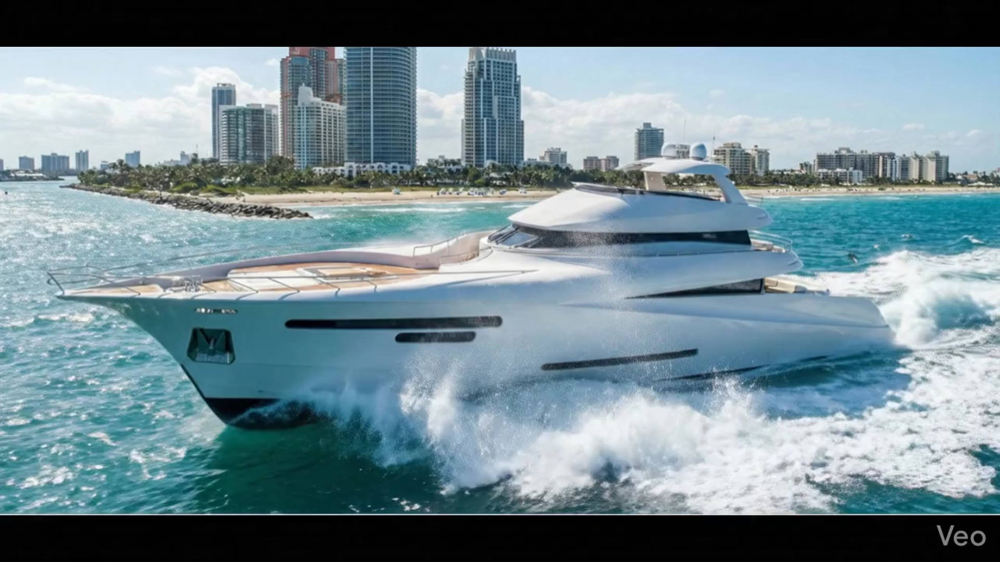
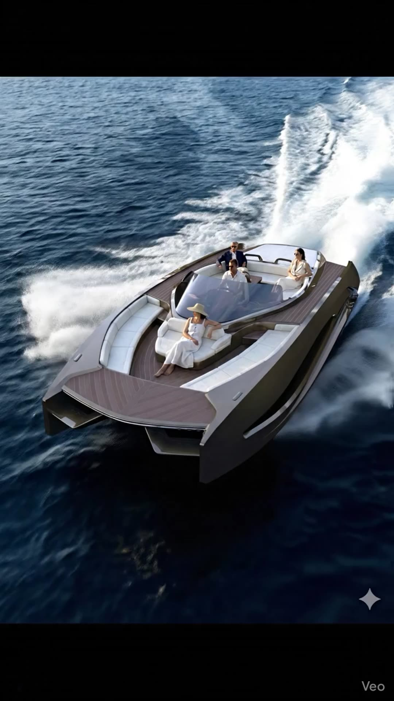
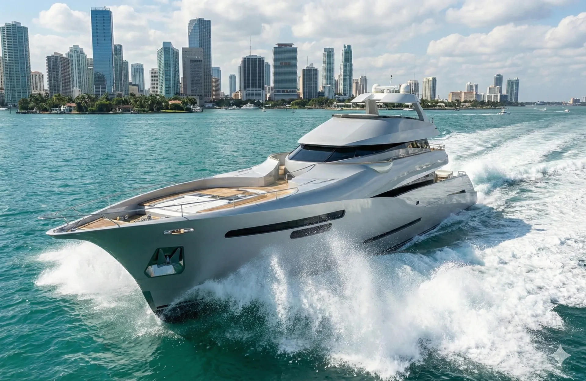
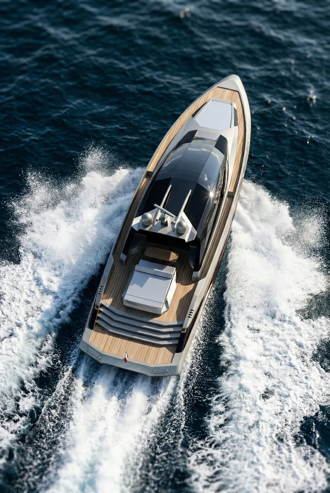
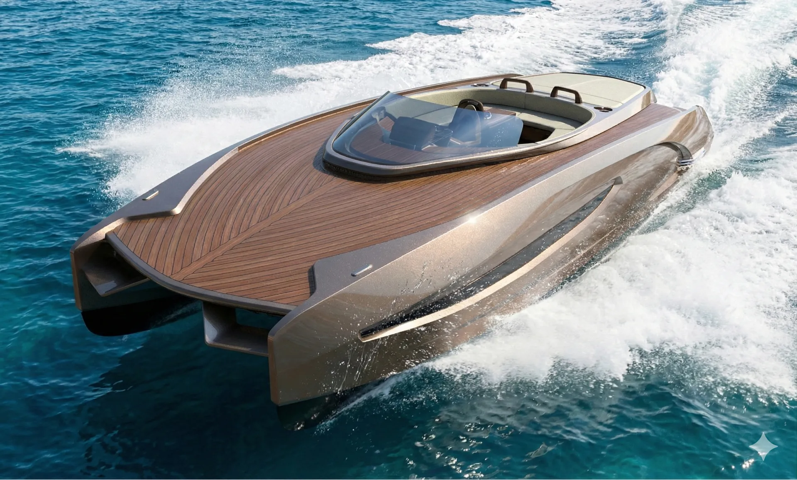
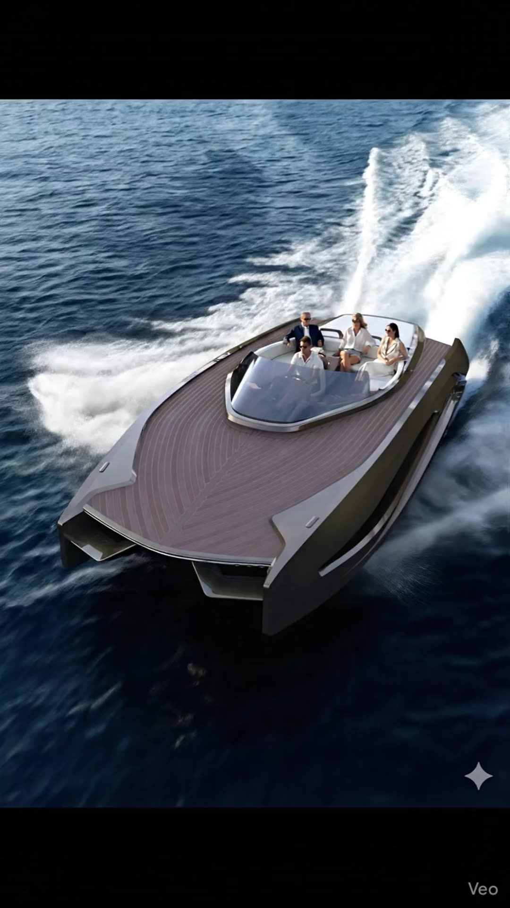
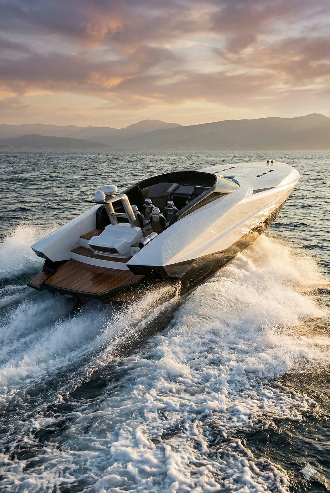

05 / Casa VELLARIO
Casa VELLARIO
An Italian State of Mind
La Casa VELLARIO. An Italian design house built around elegance, identity and individuality.

La Visione
La Visione
Design, character and measured rarity.
La Casa VELLARIO begins with one conviction: a boat can be valued as a work of design, admired for its identity, precision and individuality as much as for the moments it makes possible. The ambition is a considered collection, not a catalogue without limits.
Casa VELLARIO / 02
L'Anima Italiana
Italianità is more than a place of origin. It is a way of seeing: an understanding of beauty, the pleasure of good design, hospitality and the confidence of simplicity. The Lago di Como provides our inspiration; the wider Italian culture of saper fare gives meaning to the direction we intend to follow.

Il Nostro Metodo
Il Nostro Metodo
A brand-led design house, not an inherited shipyard.
The proposed VELLARIO model places design and identity at the centre. The design house intends to guide styling, product development, the selection of materials, quality expectations and the relationship with each future client. Specialised construction is envisaged through carefully selected partner shipyards. This structure allows the brand to concentrate its attention where it matters most: on the character of each boat and the experience around it.

La Relazione
La Relazione
Personal by nature.
Il piacere di conoscersi: the pleasure of getting to know one another. A meaningful luxury relationship should begin with a conversation, not a checkout. We envisage a discreet, direct exchange in which individual preferences meet a clear and recognisable VELLARIO design identity.
Casa VELLARIO / 05
Il Futuro
A Future Made with Intention
A new design house takes shape one decision at a time: defining its identity, refining a collection, bringing design and technical disciplines together, and choosing the people able to realise its ambition. VELLARIO's future will be measured less by the number of boats it introduces than by the distinctiveness and integrity of each one.
VELLARIO / ARCHIVIO VISIVO
Un mondo di possibilità
ORIGINAL DESIGN STUDIES · NON PRODUZIONE VELLARIO
Gran MarlinDESIGN STUDY · ORIGINAL ARCHIVE Gran MarlinIL FILM · DESIGN STUDY
Gran MarlinIL FILM · DESIGN STUDY
FY70DESIGN STUDY · ORIGINAL ARCHIVE FY70IL FILM · DESIGN STUDY
FY70IL FILM · DESIGN STUDY
Quantum 999DESIGN STUDY · ORIGINAL ARCHIVE
Quantum 999IL FILM · DESIGN STUDY
GranTender 72DESIGN STUDY · ORIGINAL ARCHIVEGranTender 72IL FILM · DESIGN STUDY